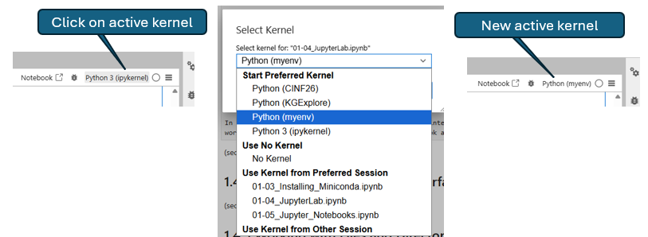
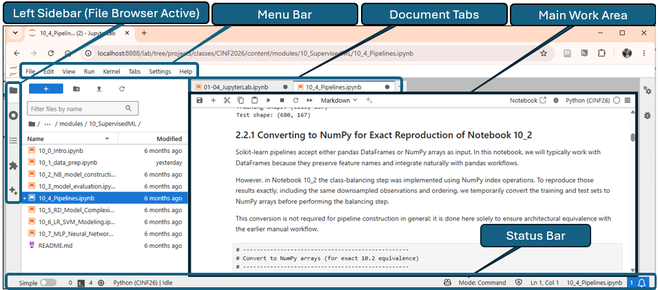
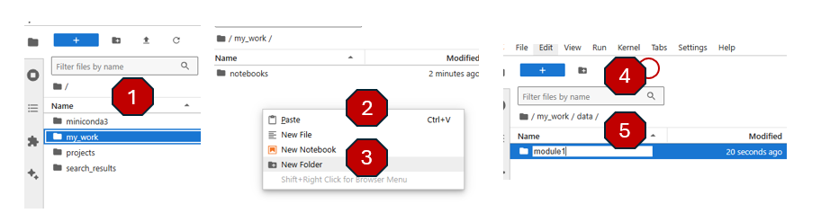
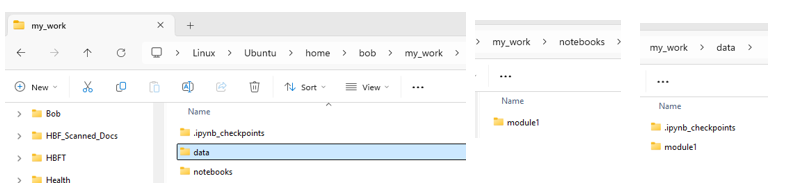

1.4 JupyterLab#
1.4.1 Project Jupyter and the Jupyter Ecosystem#
Project Jupyter is an open-source initiative that develops software and tools for interactive computing, scientific research, and education. The name Jupyter originated from three programming languages: Julia, Python, and R. Although we will focus on Python in this course, Jupyter supports many programming languages.
One of the central ideas behind Project Jupyter is that scientific computing involves more than simply writing and executing code. Scientists also need to document their methods, analyze data, visualize results, and communicate their findings. The Jupyter ecosystem provides tools that help integrate these activities into a common workflow.
Several related Jupyter tools serve different purposes:
Tool |
Purpose |
|---|---|
Jupyter Notebook |
A document ( |
JupyterLab |
A browser-based application for working with notebooks, Python scripts, data files, terminals, and other scientific computing resources. |
JupyterHub |
A system that provides multiple users with access to centrally managed Jupyter computing environments, often running on remote servers. |
Jupyter Book |
A publishing system that transforms notebooks and Markdown files into structured websites, textbooks, and other instructional materials. |
These tools are related, but they are not interchangeable. A notebook is a computational document, JupyterLab is an environment for working with that document, JupyterHub provides access to remotely hosted computing environments, and Jupyter Book provides a way to publish notebooks and other materials for others to read.
1.4.2 What Is JupyterLab?#
JupyterLab is a browser-based interactive computing environment that provides a graphical interface for working with Jupyter notebooks, Python scripts, data files, and terminals. Unlike the published Jupyter Book, which is primarily used to read course materials, JupyterLab allows us to create, edit, execute, and organize our own scientific computing projects.
One of the primary activities in JupyterLab is working with Jupyter notebooks. A notebook consists of individual cells, which can contain three types of content:
Code cells contain executable programming instructions, such as Python code, along with any resulting output.
Markdown cells contain formatted text, headings, lists, links, and mathematical expressions. Markdown (MD) is a lightweight markup language that allows us to format text using simple symbols rather than a word processor.
Raw cells contain text that is not executed as code or rendered as Markdown. They are less commonly used and can be useful when exporting notebooks to other formats.
JupyterLab can have multiple notebooks open simultaneously, each in its own tab. These notebooks can execute code independently using different kernels, which are processes that execute code within particular computing environments. For example, one notebook might use Python from our myenv environment, while another uses Python from a different Conda environment. We will explore how kernels relate to Conda environments later in this lesson.
Although JupyterLab runs in a web browser, that does not necessarily mean our calculations are performed on the internet. When we launch JupyterLab on our own computers, its server and Python processes run locally. The browser provides the interface through which we interact with them. Later, we may also use JupyterLab through remote services such as JupyterHub, where the computations run on another computer.
In the next section, we will activate the jlab Conda environment we created earlier and launch JupyterLab for the first time.
1.4.3 Starting and Stopping JupyterLab#
In Section 1.3.6.2, Creating a JupyterLab Environment, we created a Conda environment called jlab and installed JupyterLab. We will now activate that environment and launch JupyterLab for the first time.
Starting JupyterLab#
Open your Ubuntu (Windows/WSL) or macOS terminal and activate the jlab environment:
conda activate jlab
Your terminal prompt should now display (jlab), indicating that the environment is active.
Next, enter:
jupyter lab
This command starts a Jupyter server on your computer and normally opens JupyterLab in your default web browser. The terminal also displays information about the running server, including URLs that can be used to access it.
http://localhost:8888/lab?token=...
http://127.0.0.1:8888/lab?token=...
Both URLs access the same Jupyter server running on your computer. Let’s examine their components:
localhostrefers to your own computer. The numeric address127.0.0.1is another way of referring to the same computer.8888is the port number used by this Jupyter server. This is the default port, although Jupyter may use another port (such as 8889) if 8888 is already in use./labdirects your browser to the JupyterLab interface.?token=...is an authentication token generated by the Jupyter server. The...in the example represents a long, randomly generated string that helps prevent unauthorized access to the server. Each Jupyter server normally generates its own token, which is included in the URL displayed in the terminal.
Once JupyterLab is running, you can usually access it by entering http://localhost:8888/lab in your browser, without including the authentication token. This works because your browser may remember that you have already authenticated with the Jupyter server. However, if you are opening JupyterLab for the first time, using a different browser, or connecting to a server that has generated a new token, you may be asked to authenticate again. In that case, copy the complete URL, including the token, from the terminal where JupyterLab is running and paste it into your browser’s address bar.
Important: The Jupyter server must be running for your browser to connect to it. Keep the terminal where you launched JupyterLab open, as you will need it when you are ready to shut down the server. If you need to execute additional commands while JupyterLab is running, you can open another terminal window or tab.
Starting JupyterLab from Different Directories#
Recall our earlier discussion of files, directories, and file paths. When we start JupyterLab, the directory from which we launch the server normally becomes the root directory of the JupyterLab file browser. The file browser can navigate through this directory and its subdirectories, but it cannot normally navigate to directories above it. For example, if we enter:
cd ~/projects
jupyter lab
JupyterLab will normally open with ~/projects as its root directory. We can navigate through the files and subdirectories within ~/projects, but we cannot use the JupyterLab file browser to move up to our home directory (~) or access other directories outside ~/projects.
For this course, we recommend starting JupyterLab from your home directory, which is represented by ~ in Unix-like systems:
cd ~
conda activate jlab
jupyter lab
We will explore the JupyterLab file browser and its navigation features later in this lesson.
Stopping JupyterLab#
When you are finished working in JupyterLab, save any open notebooks and return to the terminal where you started the server. Press:
Ctrl+C
Jupyter may ask you to confirm that you want to shut down the server. If prompted, type y and press Enter. This stops the Jupyter server and returns control to your terminal.
Closing the browser tab does not necessarily stop JupyterLab. The server may continue running in the terminal even after you close the browser. Conversely, if you close the terminal or stop the server, your JupyterLab browser session will no longer be able to communicate with it.
Once the server has stopped, you can deactivate the Conda environment if you wish:
conda deactivate
Try it yourself: Activate jlab, start JupyterLab, observe the browser address and terminal output, and then shut down the server using Ctrl+C. Restart it once more to verify that you can open and close JupyterLab independently.
In the next section, we will examine what happens behind the scenes when JupyterLab runs, including the relationship between the Jupyter server, Python environments, and kernels.
1.4.4 Understanding Servers, Environments, and Kernels#
In the previous section, we launched JupyterLab from our jlab Conda environment. However, in Section 1.3.6, Creating and Exploring Conda Environments, we created two environments with different purposes:
jlabcontains JupyterLab and the software needed to run its interface.myenvcontains Python and scientific packages such as NumPy and Matplotlib, which we want to use in our notebooks.
How can we run JupyterLab from one environment while executing Python code from another? The answer involves understanding the relationship between Jupyter servers, environments, and kernels.
How JupyterLab Executes Python Code#
When we launch JupyterLab from the jlab environment, we start a Jupyter server, which provides the interface we access through our browser. The server manages notebooks, files, and connections to computational processes called kernels. A kernel is a separate process that executes the code in a notebook. For Python notebooks, the kernel uses a particular Python interpreter and its associated packages. This means that the environment used to run JupyterLab does not have to be the same environment used to execute our notebook code.
For example, we can launch JupyterLab from jlab and open a notebook that uses a Python kernel associated with myenv. When we execute code in that notebook, Python and the scientific packages installed in myenv are used, even though JupyterLab itself is running from jlab. We can also have multiple notebooks open simultaneously, with each notebook connected to its own kernel. One notebook might use myenv, while another uses a different Python environment. The notebooks can execute code independently without interfering with each other’s Python variables or memory.
Making Our myenv Environment Available as a Kernel#
Before JupyterLab can use myenv as a notebook kernel, we need to make sure it is registered with Jupyter. Recall that we installed a package called ipykernel when we created myenv. This package provides the software that allows a Python interpreter to communicate with the Jupyter server. We will now register myenv as an available kernel.
Step 1: Activate myenv
Open a new terminal and enter:
conda activate myenv
Step 2: Register the Python kernel
Enter:
python -m ipykernel install --user --name myenv --display-name "Python (myenv)"
Let’s examine the command:
python -m ipykernel installregisters a Jupyter kernel associated with the Python interpreter in our active environment.--userinstalls the kernel configuration for our user account.--name myenvgives the kernel an internal name.--display-name "Python (myenv)"specifies the name that will appear in JupyterLab’s kernel selection menu.
The command creates a small configuration file, called a kernel specification or kernelspec, that tells Jupyter how to start Python from myenv. It does not create another Conda environment or install another copy of Python.
Step 3: Verify the available kernels
We can view the registered Jupyter kernels using:
jupyter kernelspec list
You should see an entry named myenv, along with any other kernels available on your computer. Once the kernel has been registered, we can deactivate myenv and return to jlab when we want to launch JupyterLab.
conda deactivate
conda activate jlab
jupyter lab
When we create or open a notebook, JupyterLab will allow us to select the Python (myenv) kernel. We can then execute Python code using the interpreter and packages installed in myenv.
This separation is useful for scientific computing. We can maintain one JupyterLab installation while creating different Python environments for different projects. Each project can use the packages and versions it requires without unnecessarily changing the environment that runs JupyterLab.
Viewing and Changing a Notebook’s Kernel#
When a notebook is open in JupyterLab, its active kernel appears in the upper-right corner of the notebook window. The kernel determines which Python interpreter and installed packages are used to execute the notebook’s code.
The figure below illustrates the basic process of changing a notebook’s kernel.

To change the kernel for a notebook:
Locate the active kernel.
In the upper-right corner of the notebook, JupyterLab displays the name of the kernel currently connected to that notebook. In the example, the notebook is initially usingPython 3 (ipykernel).Click the kernel name.
Clicking the kernel name opens the Select Kernel menu, which lists the available kernels on your system.Choose a different kernel.
In this example, we select Python (myenv), which is the kernel associated with themyenvConda environment.Confirm the change.
After you select a new kernel, its name appears in the upper-right corner of the notebook. This confirms that the notebook is now connected to the new kernel. Changing the kernel changes the Python interpreter and installed packages used by that notebook. It does not change the Conda environment running the JupyterLab server itself. It is also important to remember that a different kernel means a different Python process. Variables, imported packages, and other information stored in the previous kernel’s memory are not automatically available after switching.
Different notebooks can use different kernels at the same time. For example, one notebook might use Python (myenv) while another uses a different Python environment. This is one reason JupyterLab is such a flexible environment for scientific computing.
In the next lesson, we will create notebooks, choose kernels, and begin executing Python code.
1.4.5 Anatomy of JupyterLab#
Now that we have launched JupyterLab and learned how it connects notebooks to different Python environments, let’s explore its graphical interface.
JupyterLab provides a flexible workspace for working with notebooks, Python scripts, data files, terminals, and other scientific computing resources. Like many desktop applications, it contains menus, toolbars, sidebars, and a main work area where multiple documents can be opened and arranged.
The following image illustrates the major components of the JupyterLab interface.

The JupyterLab workspace, showing the menu bar, left sidebar with the File Browser active, document tabs, main work area, and status bar.
The major components of the interface include:
Menu Bar: Located near the top of JupyterLab, this provides access to commands for opening and saving files, editing documents, managing kernels, changing settings, and obtaining help.
Left Sidebar: Contains icons for opening different tools, including the File Browser, running sessions, and table of contents. In the image above, the File Browser is active, allowing us to navigate through files and directories accessible from the Jupyter server.
Document Tabs: Allow us to switch between open notebooks and other documents. Multiple documents can be open simultaneously and arranged in different parts of the workspace.
Main Work Area: The central region where notebooks, text files, terminals, and other documents are displayed and edited.
Toolbars: Provide convenient buttons for commonly used commands. For example, the File Browser toolbar contains buttons for creating a new folder, uploading files, refreshing the directory listing, and opening the Launcher. When a notebook is open, its Notebook toolbar provides controls for saving the notebook, adding cells, executing code, and selecting cell types. Different tools and document types may have different toolbars.
Status Bar: Located at the bottom of JupyterLab, this displays information about the current session and active document, such as kernel status and editing mode.
JupyterLab also includes a right sidebar that provides access to additional tools, depending on the extensions and features installed.
Learning JupyterLab Throughout the Course
Our goal in this module is to establish a working scientific computing environment and become familiar with the tools we will use throughout the course. We do not need to master every feature of JupyterLab before we begin using it. As the course progresses, we will create our own Jupyter notebooks, obtain additional course materials by cloning a GitHub repository, and use JupyterLab to write Python code, work with scientific data, and organize our projects. Along the way, we will encounter new commands, menus, and features as they become relevant to the tasks we are performing.
In addition to the activities embedded in our lessons, we will develop a series of appendices that serve as reference guides for JupyterLab, Conda, Unix commands, GitHub, and other computing tools introduced in this module. These resources will provide more detailed explanations and instructions that you can return to whenever you need them, without interrupting the progression of the main course.
For now, take a few minutes to explore the JupyterLab interface. Identify the menu bar, sidebars, File Browser, document tabs, main work area, and status bar. Open a few menus and observe the available commands. You do not need to memorize them or create any files yet.
The important thing is to become comfortable navigating JupyterLab and knowing where to look when you need a particular tool.
1.4.6 Working with Files and Directories#
In Section 1.1, we introduced files, directories, and file paths, and discussed how operating systems organize information in a hierarchical file system. In Section 1.2, we learned some basic terminal commands for navigating directories. Since then, we have installed Miniconda, created a Conda environment named myenv, and installed JupyterLab. But where is all this software located on our computer, and how does it relate to the files we will create as we learn Python?
1.4.6.1 Python Environments and Your Personal Workspace#
Recall that a Python environment provides a particular Python interpreter along with a collection of installed packages and dependencies. Our computer may now have several different Python interpreters:
System Python: A Python interpreter provided or managed by the operating system.
Conda base Python: The interpreter installed with Miniconda in its
baseenvironment.Our
myenvPython: The interpreter associated with the Conda environment we created for this course.
These interpreters are separate executable files, located in different directories. For example, on an Ubuntu system with Miniconda installed in the default location, our file system might resemble:
├── usr/
│ └── bin/
│ └── python3 # System Python
│
└── home/
└── student/
├── miniconda3/
│ ├── bin/
│ │ └── python # Conda base Python
│ └── envs/
│ ├── myenv/
│ │ └── bin/
│ │ └── python # Python for myenv kernel
│ │
│ └── jlab/
│ └── bin/
│ └── python # Python for running JupyterLab
│
├── py4sci/ # Course GitHub repository (to be cloned)
│
└── my_work/ # Our personal workspace (to be created)
├── notebooks/
│ └── module1/
└── data/
└── module1/
Organizing Course Materials and Our Personal Workspace#
Notice that the Python environments are located inside the miniconda3 directory, while our course materials and personal workspace will be located elsewhere.
Python environments contain the software we use to run our programs, while our personal workspace contains the programs, data, and results we create. A Python program does not need to be stored in the same directory as the environment used to execute it. In fact, we may use different Python environments to run programs stored in the same workspace.
Later in this module, we will use Git to clone the course repository from GitHub into a directory named py4sci. Cloning a repository downloads its files and reproduces its directory structure on our computer. This means that the notebooks, data files, and other course materials will already be organized into directories when we obtain them.
We will periodically update the course repository using git pull to obtain new assignments, examples, and other materials from the instructor. We should not modify the original files in py4sci. Instead, we will copy the files we need into our personal workspace and work on those copies. This will allow us to update the course repository without interfering with our own work or creating conflicts with changes made by the instructor.
Unlike the course repository, our personal workspace will not be downloaded from GitHub. We will create its directory structure ourselves, beginning in this activity. Our workspace will be named my_work and will contain two primary directories:
notebooks/will contain our Jupyter notebooks and the Python code we develop throughout the course. We will organize notebooks by module so that we can easily locate the programs associated with different assignments and activities.data/will contain datasets used by our programs, as well as files generated during our analyses. These may include experimental measurements, environmental sensor readings, data retrieved from online sources, or results produced by Python programs.
Initially, we will create a module1 directory under both notebooks and data:
my_work/
├── notebooks/
│ └── module1/
└── data/
└── module1/
As we progress through the course, we will add directories for subsequent modules and projects. For example, a notebook stored in my_work/notebooks/module1 might read experimental measurements from my_work/data/module1, perform calculations, and save the results back into that data directory.
This organization will become particularly important as we begin working with multiple scientific programs, datasets, and Python environments. By keeping our files organized, we will know where to find the materials for each activity, where to save our work, and how to locate the data needed by our programs.
1.4.6.2 Creating Our Personal Workspace#
We will now create the directory structure described in the previous section. We will use two different approaches: first, the command-line interface (CLI), and then the graphical file browser in JupyterLab.
Both interfaces interact with the same file system, but they provide different ways of working with files and directories.
Creating Directories Using the Command Line#
We will begin by creating the my_work/notebooks/module1 directory structure using the terminal. Open a terminal in JupyterLab or use the Ubuntu terminal (Windows/WSL) or Terminal (macOS) and note, you are not using any packages and so do not need to activate a Conda environment.
First, navigate to your home directory:
cd ~
Recall that ~ represents your home directory. We are starting here because we want my_work to be located directly within our home directory, alongside the py4sci directory we will create later when we clone the course repository.
Now enter:
mkdir -p my_work/notebooks/module1
This single command creates three nested directories:
my_work, our personal workspace.notebooks, where we will store our Jupyter notebooks.module1, where we will store the notebooks associated with Module 1.
The mkdir command stands for make directory. The -p option tells the operating system to create any missing parent directories along the specified path.
Without -p, we would need to create each directory separately, beginning with my_work, then notebooks, and finally module1.
We can verify that our directories were created by entering:
ls my_work
The output should be:
notebooks
We can also examine the contents of the notebooks directory:
ls my_work/notebooks
Which should display:
module1
We have now created three nested directories with a single command!
bob@MSI:~$ mkdir -p my_work/notebooks/module1
bob@MSI:~$ ls my_work
notebooks
bob@MSI:~$ ls my_work/notebooks
module1
bob@MSI:~$
Creating Directories Using the JupyterLab File Browser#
Next, we will create our data/module1 directory structure using JupyterLab’s graphical file browser. In JupyterLab, locate the File Browser panel on the left side of the interface. If it is not visible, click the folder icon in the left sidebar. Navigate to your home directory and open my_work.
You should see the notebooks directory that you just created using the terminal.
Notice that we did not need to import or transfer anything into JupyterLab. The directory appears automatically because JupyterLab’s file browser and the terminal access the same file system.
Now create the data directories:
Navigate to my_work
While viewing
my_work, right-click in an empty area of the file browser and select New Folder.Rename the new folder
data.Double-click
datato open it.4. Double-clickdatato open it.This time choose the “New Folder” Icon, select New Folder, and rename this folder
module1.
You should now have the following directory structure:
my_work/
├── notebooks/
│ └── module1/
└── data/
└── module1/
We could also have created these directories using our operating system’s graphical file manager: File Explorer in Windows or Finder in macOS.
Verifying Our Directory Structure#
The following screenshot shows our my_work directory as viewed through Windows File Explorer, including the directories we created using the terminal and JupyterLab.

Let’s return to the terminal and verify that the directories we created in JupyterLab are visible there as well.
First, return to your home directory:
cd ~
Then enter:
ls my_work/data
You should see:
module1
We created notebooks/module1 using the terminal and data/module1 using JupyterLab. We then viewed both directories through Windows File Explorer and verified their existence using the terminal.
Although we used different interfaces, we were working with the same file system. Each interface provides a different way to create, organize, and access files and directories, but the resulting directories are the same regardless of how they were created.
This is an important principle of scientific computing. Sometimes a graphical interface is more convenient, while other times a command-line instruction can accomplish several steps at once. As we learn Python, we will discover a third approach: writing programs that create, read, and modify files automatically.
The choice of interface depends on the task, but the underlying files and directories remain the same.
We now have a personal workspace organized into separate directories for notebooks and data. In the next activity, we will create our first Jupyter notebook and use Python to generate a text file in our new data/module1 directory.